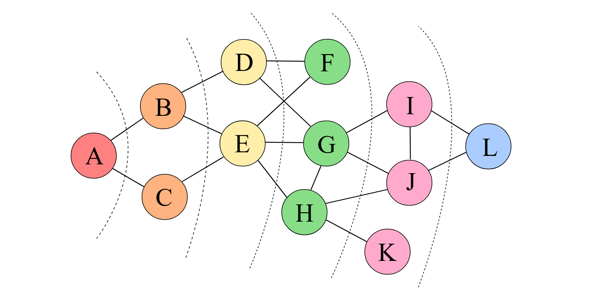
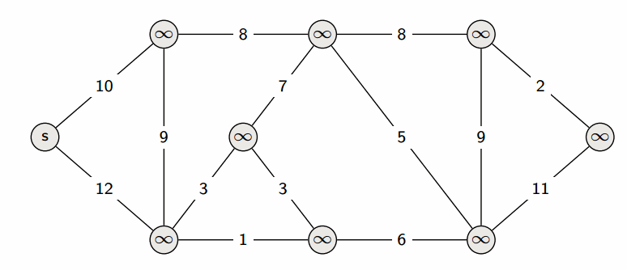
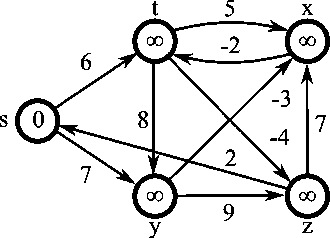
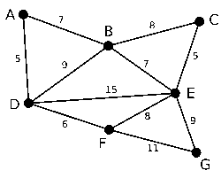
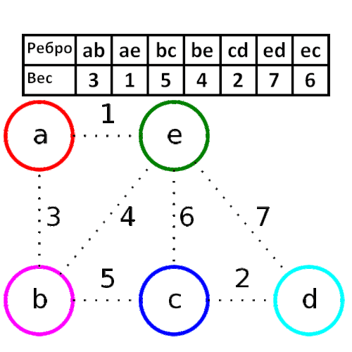

Урок 9. Поиск путей в графах
Во многих практических задачах (прокладка маршрутов, проектирование сетей, оптимизация логистики) требуется находить пути между вершинами графа, оптимальные по некоторому критерию. В этом уроке мы рассмотрим основные алгоритмы поиска кратчайших путей и построения минимальных остовных деревьев.
1. Основные понятия
Путь в графе — последовательность вершин, в которой каждая следующая соединена с предыдущей ребром. Длина пути может измеряться числом рёбер (для невзвешенных графов) или суммой весов рёбер (для взвешенных). Кратчайший путь — путь минимальной длины между заданными вершинами.
В зависимости от свойств графа (наличие весов, отрицательные рёбра, циклы) применяются разные алгоритмы.
2. Поиск в ширину (BFS) для невзвешенных графов
Если все рёбра имеют одинаковый вес (или вес не учитывается), кратчайший путь по числу рёбер находится с помощью алгоритма поиска в ширину (Breadth‑First Search). Алгоритм обходит граф слоями: сначала стартовую вершину, затем всех её соседей, потом соседей соседей и т.д. Первое обнаружение целевой вершины гарантирует кратчайший путь.

Пример. Найти кратчайший путь от A до L в невзвешенном графе. Здесь 4 кратчайших пути A→C→E→G→I→L; A→C→E→G→J→L; A→B→E→G→I→L; A→B→E→G→J→L (длина 6).
3. Алгоритм Дейкстры (положительные веса)
Для взвешенных графов, где веса рёбер неотрицательны, классическим методом является алгоритм Дейкстры. Он находит кратчайшие расстояния от одной вершины до всех остальных.
Идея алгоритма
- Каждой вершине присваивается предварительное расстояние: 0 для стартовой, ∞ для остальных.
- Все вершины считаются необработанными. Пока есть необработанные вершины, выбирается вершина с минимальным известным расстоянием (текущая).
- Для каждого соседа текущей вершины вычисляется новое расстояние как сумма расстояния до текущей и веса ребра. Если это расстояние меньше текущего известного расстояния до соседа, оно обновляется.
- Текущая вершина помечается как обработанная (больше не рассматривается).

Алгоритм Дейкстры работает только при неотрицательных весах. Если есть отрицательные рёбра, он может дать неверный результат.
4. Алгоритм Беллмана–Форда (отрицательные веса)
Этот алгоритм находит кратчайшие пути от одной вершины до всех остальных даже при наличии отрицательных весов, но не терпит отрицательных циклов (циклов с отрицательной суммой весов). Он также может обнаруживать такие циклы.
Алгоритм выполняет N-1 итерацию (N — число вершин), на каждой итерации пытается улучшить расстояния, используя все рёбра. После N-1 итерации дополнительная проверка позволяет выявить отрицательный цикл.

5. Минимальное остовное дерево (МОД)
Остовное дерево — это подграф, содержащий все вершины исходного связного графа и являющийся деревом (без циклов). Минимальное остовное дерево — остовное дерево с наименьшей возможной суммой весов рёбер. Задачи такого типа возникают при прокладке коммуникаций (дорог, кабелей) с минимальными затратами.
5.1. Алгоритм Прима
Строит МОД, начиная с произвольной вершины, и постепенно добавляет самое дешёвое ребро, соединяющее построенное дерево с ещё не включённой вершиной.

5.2. Алгоритм Краскала
Сортирует все рёбра по возрастанию веса и последовательно добавляет рёбра, не образующие цикла, пока не будут соединены все вершины. Для проверки циклов используется структура данных «система непересекающихся множеств» (DSU).
